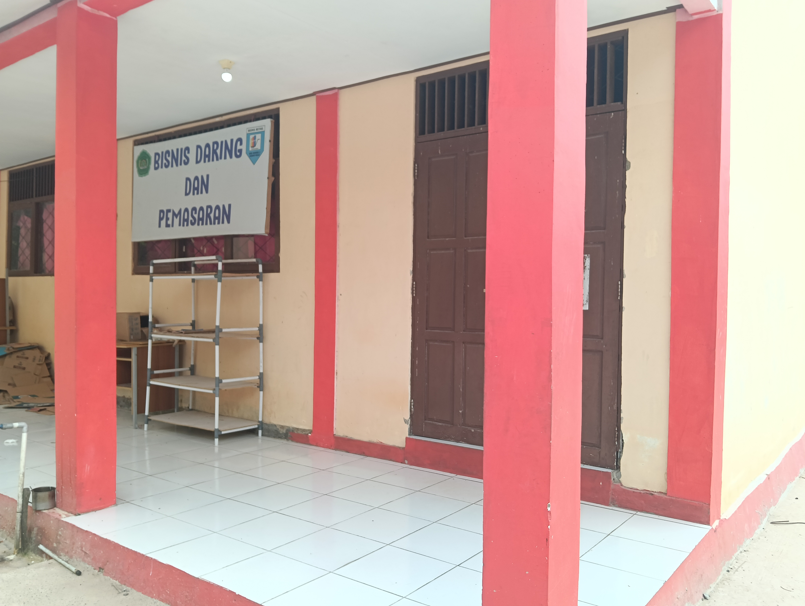
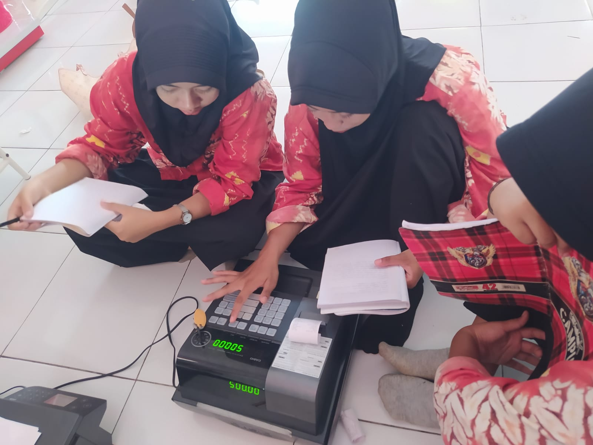
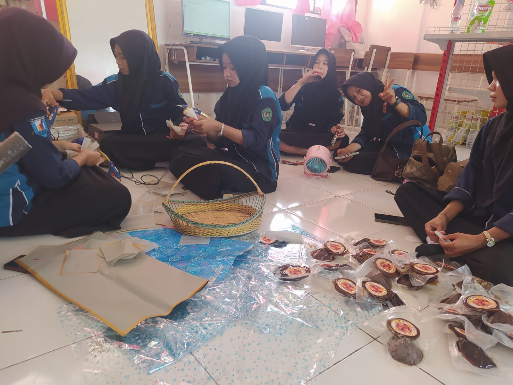

Bisnis Daring dan Pemasaran (BDP)

Mengenal Program BDP
Bisnis Daring dan Pemasaran (BDP) merupakan program keahlian yang mempelajari kegiatan bisnis, pemasaran, serta pemanfaatan teknologi digital dalam dunia usaha. Program ini membekali peserta didik dengan pengetahuan dan keterampilan untuk memahami proses pemasaran, pelayanan pelanggan, dan pengelolaan usaha.
Kompetensi yang Dipelajari
01. Dasar-Dasar Pemasaran
Mempelajari konsep dasar pemasaran, strategi promosi, serta cara mengenalkan produk kepada calon konsumen.
02. Komunikasi Bisnis
Mempelajari cara berkomunikasi secara baik dan profesional dalam kegiatan bisnis serta pelayanan kepada pelanggan.
03. Bisnis Digital
Mengenal pemanfaatan teknologi digital dalam kegiatan usaha, termasuk pemasaran dan penjualan melalui media daring.
04. Pengelolaan Usaha
Mempelajari dasar pengelolaan kegiatan usaha, mulai dari perencanaan, pengelolaan produk, hingga pelayanan konsumen.
Tenaga Pendidik Jurusan
Tenaga pendidik yang berperan dalam pengelolaan dan pembelajaran program keahlian.
Rudijansen Lekairua, S.Pd., Gr.
Kepala Program Keahlian
Duma Risfa Banjar Nahur, S.Pd., Gr.
Guru Produktif 1
Ayu Istianah Putri, S.E., Gr.
Guru Produktif 2
Galeri Dokumentasi

Dokumentasi Kegiatan Siswa BDP

Dokumentasi Kegiatan Siswa BDP
Dokumentasi kegiatan program keahlian Bisnis Daring dan Pemasaran.